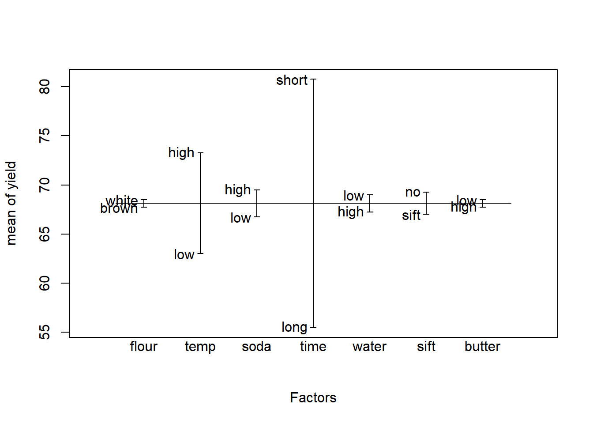

16Rescue failed experiments using fractional factorial designs
Have you ever had a failed experiment? I certainly have. All the measurements came out as 0, or the cells died, or the seeds didn’t sprout, or even the positive controls came out negative.
How can you quickly figure out what is going wrong with the minimum amount of work? How can you quickly identify which factors are affecting the response? The answer is fractional factorial designs.
16.1 Example: How to bake good cookies: A fractional factorial experiment
As a familiar example, suppose we are baking cookies, but we keep ending up with a lot of burnt cookies, a lot of soggy undercooked cookies, or a lot of bad tasting cookies. We want to maximize the yield of good tasting cookies. How do we quickly find out what is going wrong?
We think of 7 factors that might be affecting the yield of good tasting cookies:
Flour type (white or brown)
Temperature in the oven (low or high)
Baking soda amount (low or high)
Time in the oven (short or long)
Water amount (low or high)
Sifting (sift or no)
Butter among (low or high)
Here is a fractional factorial design to analyze cookie yield versus these 7 factors in only 8 batches of cookies.
flour temp soda time water sift butter yield
1 brown low low long high sift low 47
2 white low low short low sift high 74
3 brown high low short high no high 84
4 white high low long low no low 62
5 brown low high long low no high 53
6 white low high short high no low 78
7 brown high high short low sift low 87
8 white high high long high sift high 60
Each row is a batch. The 7 columns flour, … butter, are the factors set to their high or low values we think may affect the yield. The last column is the yield of good cookies we get using the specified values for the factors for each batch. For example, for the combination of factors in row 1 (flour = brown, temp = low, etc.), the yield is 47 good cookies.
We can quickly see which factors are important by plotting the averages for each level of the factors with the R function plot.design(cookie.data).
plot.design(cookie.data)

The graph that plot.design(cookie.data) produces shows each factor on the x-axis, and the average yield at each level of the factor on the y axis. The factor “time” has the biggest difference between settings: a yield near 80 for a short time in the oven versus a yield near 55 for a long time in the oven. From the graph we see that time has the largest effect on yield, followed by temperature. The other factors seem to have little effect on yield.
Notice in the cookie data that each level of each factor gets tested in 4 batches. For example, the variable temp is low in batches 1, 2, 5, and 6. It is high in the other 4 batches.
Batch 7, with 87 good cookies, and batch 3, with 84 good cookies, are the best. Which factor levels are giving us the high yields? We would like to know the average yield for each variable when it is at each level. One way to get this is with the R function aggregate().
with(cookie.data, aggregate(yield ~ time, FUN = mean))
time yield
1 long 55.50
2 short 80.75
The average yield with time long is 55.5 good cookies, while the average yield with time short is 80.75 good cookies. The difference is 80.75 - 55.5 = 25.25 good cookies. Apparently leaving them in the oven too long may be giving us a lot of burnt cookies.
We can get the difference between the levels for each factor using the lm() and summary() functions. (These give the results for an analysis of variance of the cookie data.)
lm.cookie =lm(yield ~ ., data = cookie.data)summary(lm.cookie)
Call:
lm(formula = yield ~ ., data = cookie.data)
Residuals:
ALL 8 residuals are 0: no residual degrees of freedom!
Coefficients:
Estimate Std. Error t value Pr(>|t|)
(Intercept) 61.50 NaN NaN NaN
flourwhite 0.75 NaN NaN NaN
templow -10.25 NaN NaN NaN
sodalow -2.75 NaN NaN NaN
timeshort 25.25 NaN NaN NaN
waterlow 1.75 NaN NaN NaN
siftsift -2.25 NaN NaN NaN
butterlow 0.75 NaN NaN NaN
Residual standard error: NaN on 0 degrees of freedom
Multiple R-squared: 1, Adjusted R-squared: NaN
F-statistic: NaN on 7 and 0 DF, p-value: NA
The output from the lm() and summary() functions confirms what we saw in the graph, and gives us the quantitative differences: 25.25 for time, -10.25 for temperature, and values near 1 or 2 for the other factors.
Suppose for a moment that “sifting” was a labor-intensive or expensive step. This experiment would be evidence that the step could be eliminated with little effect on yield. The observed yield is actually 2.25 lower when sifting is done.
Suppose that butter was an expensive reagent. This experiment would suggest that the butter might be used with little effect on yield.
Consider now how much we have learned with only 8 batches:
We have identified 2 important factors.
We have evidence that the other factors have little effect on yield.
We have evidence that a labor-intensive step might be eliminated.
We have evidence that the amount of an expensive reagent could be reduced.
How many batches would it take to get this information if we did not use a fractional factorial design?
If we did one-variable-at-a-time (OVAT), we might do the following.
Run 1 batch with white flour and 1 batch with brown flour = 2 batches for flour.
Run 1 batch with temp low and 1 batch with temp high = 2 batches for temp.
And so on for all 7 factors.
This OVAT method would require 7 factors * 2 batches per factor = 14 batches, compared to the 8 batches for the factorial experiment design. But OVAT has an even bigger weakness: each level of each factor is only examined in 1 batch. In contrast, in the factorial experiment design, each level of each factor is examined in 4 batches. These additional replicates give much more reliable estimates of the effects, and much greater power to detect statistical significance and get p<0.05 for the effect of a factor.
How do we get the p-values for the effect of the factors? For this example, the graph indicates that temperature and time are the important factors. We can re-run the lm() and summary() analyses using just these two factors, which will give us the p-values.
lm.cookie.2vars =lm(yield ~ time + temp, data = cookie.data)summary(lm.cookie.2vars)
For examples of how to do the analyses using R, see the textbook Design and Analysis of Experiments with R by John Lawson (CRC Press), and the accompanying R package daewr.
Source Code
# Rescue failed experiments using fractional factorial designsHave you ever had a failed experiment? I certainly have. All themeasurements came out as 0, or the cells died, or the seeds didn'tsprout, or even the positive controls came out negative.How can you quickly figure out what is going wrong with the minimumamount of work? How can you quickly identify which factors are affectingthe response? The answer is fractional factorial designs.## Example: How to bake good cookies: A fractional factorial experimentAs a familiar example, suppose we are baking cookies, but we keepending up with a lot of burnt cookies, a lot of soggy undercookedcookies, or a lot of bad tasting cookies. We want to maximize the yieldof good tasting cookies. How do we quickly find out what is going wrong?We think of 7 factors that might be affecting the yield of good tastingcookies:- Flour type (white or brown)- Temperature in the oven (low or high)- Baking soda amount (low or high)- Time in the oven (short or long)- Water amount (low or high)- Sifting (sift or no)- Butter among (low or high)Here is a fractional factorial design to analyze cookie yield versusthese 7 factors in only 8 batches of cookies.```{r}cookie.data =data.frame(flour =c("brown","white","brown","white","brown","white","brown","white"),temp =c("low","low","high","high","low","low","high","high"),soda =c("low","low","low","low","high","high","high","high"),time =c("long","short","short","long","long","short","short","long"),water =c("high","low","high","low","low","high","low","high"),sift =c("sift","sift","no","no","no","no","sift","sift"),butter =c("low","high","high","low","high","low","low","high"),yield =c(47, 74, 84, 62, 53, 78, 87, 60))cookie.data[1:7] =lapply(cookie.data[1:7], factor)cookie.data```Each row is a batch. The 7 columns flour, … butter, arethe factors set to their high or low values we think may affect theyield. The last column is the yield of good cookies we get using thespecified values for the factors for each batch. For example, for thecombination of factors in row 1 (flour = brown, temp = low, etc.),the yield is 47 good cookies.We can quickly see which factors are important by plotting the averagesfor each level of the factors with the R function `plot.design(cookie.data)`.```{r}plot.design(cookie.data)```The graph that `plot.design(cookie.data)` produces shows each factor onthe x-axis, and the average yield at each level of the factor on the yaxis. The factor "time" has the biggest difference between settings: ayield near 80 for a short time in the oven versus a yield near 55 for along time in the oven. From the graph we see that time has the largesteffect on yield, followed by temperature. The other factors seem to havelittle effect on yield.Notice in the cookie data that each level of each factor gets tested in4 batches. For example, the variable temp is low in batches 1, 2, 5,and 6. It is high in the other 4 batches.Batch 7, with 87 good cookies, and batch 3, with 84 good cookies, arethe best. Which factor levels are giving us the high yields? We wouldlike to know the average yield for each variable when it is at eachlevel. One way to get this is with the R function `aggregate()`.```{r}with(cookie.data, aggregate(yield ~ time, FUN = mean))```The average yield with time long is 55.5 good cookies, while theaverage yield with time short is 80.75 good cookies. The difference is80.75 - 55.5 = 25.25 good cookies. Apparently leaving them in the oventoo long may be giving us a lot of burnt cookies.We can get the difference between the levels for each factor using the`lm()` and `summary()` functions. (These give the results for ananalysis of variance of the cookie data.)```{r}lm.cookie =lm(yield ~ ., data = cookie.data)summary(lm.cookie)```The output from the `lm()` and `summary()` functions confirms what wesaw in the graph, and gives us the quantitative differences: 25.25 fortime, -10.25 for temperature, and values near 1 or 2 for the otherfactors.Suppose for a moment that "sifting" was a labor-intensive or expensivestep. This experiment would be evidence that the step could beeliminated with little effect on yield. The observed yield is actually2.25 lower when sifting is done.Suppose that butter was an expensive reagent. This experiment wouldsuggest that the butter might be used with little effect on yield.Consider now how much we have learned with only 8 batches:- We have identified 2 important factors.- We have evidence that the other factors have little effect on yield.- We have evidence that a labor-intensive step might be eliminated.- We have evidence that the amount of an expensive reagent could be reduced.How many batches would it take to get this information if we did not usea fractional factorial design?If we did one-variable-at-a-time (OVAT), we might do the following.- Run 1 batch with white flour and 1 batch with brown flour = 2 batches for flour.- Run 1 batch with temp low and 1 batch with temp high = 2 batches for temp.- And so on for all 7 factors.This OVAT method would require 7 factors \* 2 batches per factor = 14batches, compared to the 8 batches for the factorial experiment design.But OVAT has an even bigger weakness: each level of each factor is onlyexamined in 1 batch. In contrast, in the factorial experiment design,each level of each factor is examined in 4 batches. These additionalreplicates give much more reliable estimates of the effects, and muchgreater power to detect statistical significance and get p\<0.05 for theeffect of a factor.How do we get the p-values for the effect of the factors? For thisexample, the graph indicates that temperature and time are the importantfactors. We can re-run the `lm()` and `summary()` analyses using justthese two factors, which will give us the p-values.```{r}lm.cookie.2vars =lm(yield ~ time + temp, data = cookie.data)summary(lm.cookie.2vars)```The analysis shows that both time and temperature have significanteffects (p\<0.05).We can do a test for an interaction between time and temperature intheir effect on yield.```{r}lm.cookie.2vars.interaction =lm(yield ~ time * temp, data = cookie.data)summary(lm.cookie.2vars.interaction)```In this case, the interaction test is not significant (p=0.73), so wecan just use the analyses of the main effects.## Additional resourcesThe YouTube video "Experiments 4A -- the trade-offs when doinghalf-fraction factorials" by Kevin Dunn introduces fractional factorialdesigns.A free PDF of the text *A First Course in Design and Analysis ofExperiments* by Gary Oehlert is available at<http://users.stat.umn.edu/~gary/Book.html>.For examples of how to do the analyses using R, see the textbook*Design and Analysis of Experiments with R* by John Lawson (CRC Press),and the accompanying R package `daewr`.